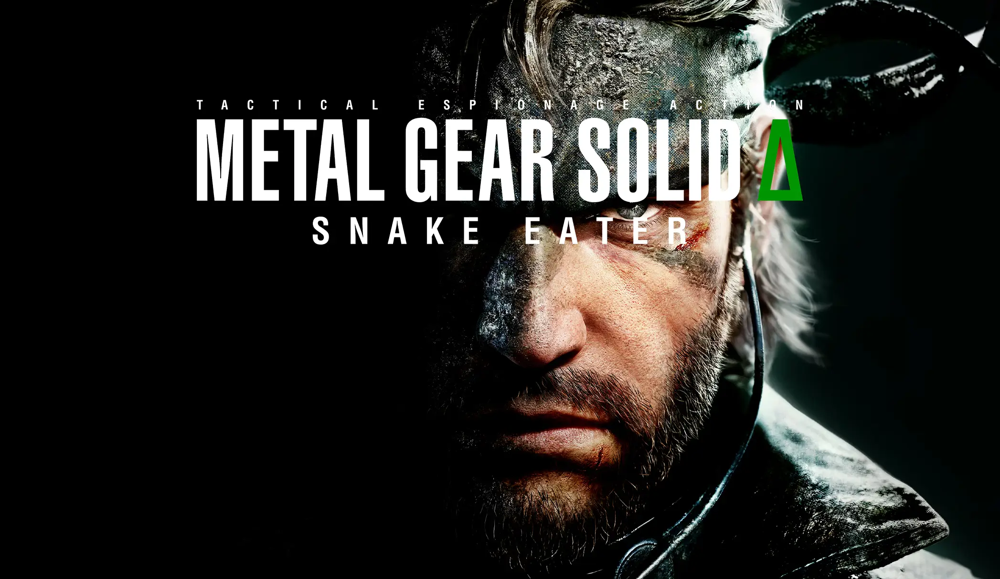

Si bien el juego base está previsto para el 28 de agosto, el modo multijugador de Metal Gear Solid Delta: Snake Eater saldrá para otoño. Konami ha dado malas noticias sobre el modo en línea, Fox hunt. No habrá juego cruzado. Los usuarios de PS5, Xbox Series y PC no podrán disfrutar juntos. Cada plataforma irá por su cuenta. Aún no sabemos si Konami piensa lanzarlo más adelante.
Si bien el juego base está previsto para el 28 de agosto, el modo multijugador de Metal Gear Solid Delta: Snake Eater saldrá para otoño. Konami ha dado malas noticias sobre el modo en línea, Fox hunt. No habrá juego cruzado. Los usuarios de PS5, Xbox Series y PC no podrán disfrutar juntos. Cada plataforma irá por su cuenta. Aún no sabemos si Konami piensa lanzarlo más adelante.
Konami ha confirmado los peores temores: este modo no tendrá juego cruzado
O dicho de otro modo, solo podremos jugar con aquellos jugadores que tengan el titulo en la misma plataforma que nosotros, impidiendo asi que, por ejemplo, un usuario de playstation 5 comparta partida con uno de xbox series X/S.